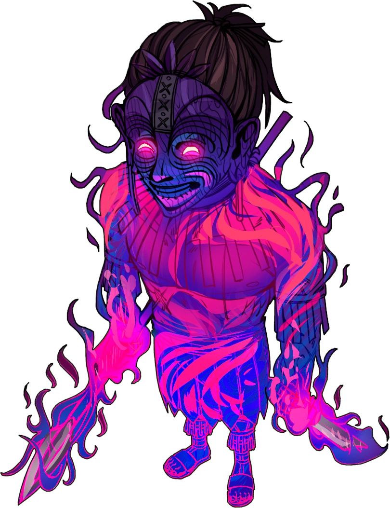
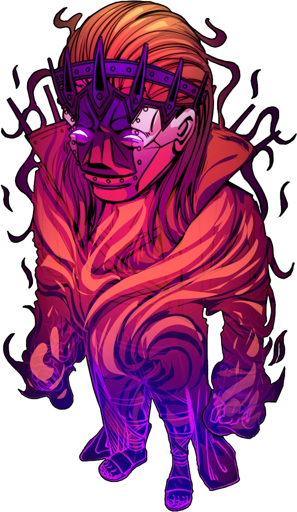

O Anfitrião é o nome dado ao portador da Relíquia de Energia. Essa entidade de Energia com complemento de Conhecimento e Medo é uma das manifestações mais incessantes por toda a história da Realidade. Ele procura apenas se divertir com a agonia e o Caos, distorcendo as regras da Realidade. Ninguém pode controlar tudo. A Realidade precisa ser transformada pela improbabilidade.
Este é um dos anfritriaus o nome dele é plautus ele possui uma máscara tribal com uma feição de sorriso forçado e olhos apertados. Além disso, a máscara apresenta marcas tribais, formas que imitam folhas em seu topo e grandes adornos nas orelhas. Plautus tinha os cabelos presos em um rabo de cavalo curto e o formato de seu corpo era bem definido, ele atacava utilizando uma lança na sua mão direita e uma adaga na sua mão esquerda. Quando visto em combate, brilhava em rosa, com chamas da mesma cor que o circulam.
Este é um dos anfritriaus o nome dele é plautus ele Liber possui uma máscara com uma feição de sorriso sem dentes e olhos pequenos. Além disso, a máscara apresenta partes roxas na região central do rosto, englobando olhos, nariz e porção superior dos lábios. Ao redor da porção roxa na face, há pequenos pontos que a contornam lateralmente e inferiormente. No topo da máscara, há uma estrutura que se assemelhava a uma coroa roxa que está fixada diretamente na máscara por incisuras em zigue-zague. Liber tinha os cabelos loiros e que ficavam soltos por baixo da máscara, caindo em seus ombros, suas vestes são compostas por um sobretudo branco aberto de mangas longas, uma espécie de manto com um adorno circular e espinhos que contornam seu pescoço e ombros por trás. Quando visto em combate, brilhava em laranja, tendo seu sobretudo com um aspecto de chamas e energia.

Na mais recente aparição do Anfitrião, ele estava utilizando o corpo de Arnaldo Fritz. Em seu rosto vestia uma máscara de gás que continha o Símbolo da Relíquia de Energia brilhando em branco, ela havia se fundido com sua face, não podendo ser retirada, também possuía diversos fios que saíam de sua máscara, no qual constantemente passavam chamas como se fossem veias humanas, esses fios cobriam sua cabeça completamente. Ele tinha a pele translúcida e que brilhava em roxo, com labaredas que mudavam de cor passando por todo seu corpo.